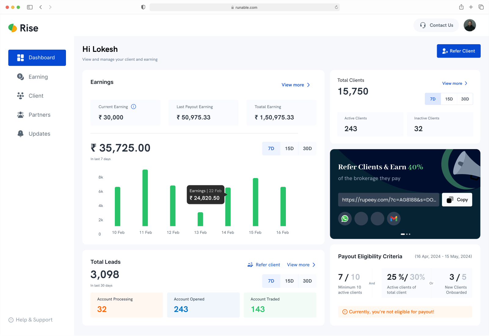
The Rise Portal dashboard. Earnings, clients, the lead funnel and payout eligibility in one view.
Case study · Rise Portal
Rise Portal is the first product Rupeezy built for its digital partners. Partners helped bring business to Rupeezy, but they couldn’t see how their referrals and their clients’ activity turned into earnings. I designed a 0 to 1 portal that connects referral progress, client activity and earnings in one place.
Rupeezy was called AsthaTrade until the rebrand, so the old domain appears in some screens.
Context
A partner shared a referral link. Someone signed up, completed KYC, opened an account and started trading. The partner earned a share of the brokerage that trading produced, paid monthly on the 15th.
The partner could see the first step and the last. The steps in between lived in spreadsheets and with Rupeezy’s teams, so the only way to see them was to call, raise a ticket or ask a relationship manager.
A reconstruction of the old workflow from what I learned on the project, not a measured service blueprint.
Referring more people did not automatically mean earning more. How many leads converted, how many clients traded, how much they traded and the share for that period could all change. Seeing only the total, a lower payout could look arbitrary.
“Last month I referred 100 people and earned X. This month I referred 200 and earned less. Why?”
A partner, relayed by support. A question the support team heard often, not an interview quote.
Rupeezy wasn’t hiding anything, but opacity can look like hiding. It also sent the same routine questions back to the support team, and it left the partner team without a product to show prospective partners.
Show the lead-to-client journey and the factors that shape earnings.
01
Let partners check routine progress themselves instead of calling or raising tickets.
02
Give the business something real to show existing and prospective partners.
03
Business goals. Objectives, not proof that each was achieved.
Evidence and constraints
This was my first project at Rupeezy, and I had never worked in broking. The PRD used terms I needed to understand before I could design anything, so I learned the business before I opened Figma.
The vocabulary I needed before I could shape the portal.
| Source | What it told me | Limitation |
|---|---|---|
| The PRD | The model: leads, clients, brokerage share, the payout cycle and the eligibility rule. | How the business works, not how partners read it. |
| Kunal, the PM, and the business team | Where the money moved, and what the business needed the portal to do. | The company’s view of partners, not theirs. |
| Support desk and recurring questions | What partners kept asking: conversions, this month’s earnings, why earnings changed, when payout would come. | A proxy. It shows what partners asked, not why, or what they did next. |
| Partner relationship managers | How partners talked about their business day to day. | Second-hand, and shaped by the partners who called most. |
No direct partner interviews before launch. I had the people who answered partners’ calls: good proxies, still proxies.
“I onboard 15–20 users every week, but I have no idea how they’re performing.”
A partner’s words, relayed by the support team. Not an interview quote.
Process
01 · Did
Understand the brokerage modelThe PRD and conversations with the PM and business team: lead, client, active client, brokerage share, payout cycle.
02 · Did, indirect evidence
Use the signals I hadRecurring support questions, the support desk and partner relationship managers. What partners kept asking about.
03 · Did, redrawn for this page
Map referral to payoutWhich steps a partner started or received, and which happened out of sight.
04 · Did
Frame two partner questionsWhere are my referrals? What will I earn, and why? Those set the hierarchy, not our team structure.
05 · Did
Design the self-serve viewDashboard, lead funnel, client list, earnings and eligibility, for desktop and mobile.
06 · Did
Resolve the constraintsThe eligibility rule, where it sits, and how much client data to show.
07 · Reported by the teams
Hear what happenedTwo months after launch, through the business and support teams. No baseline had been agreed, and no partner had been interviewed.
Information architecture
Under the four routine questions sat two jobs. If the portal answered these without a phone call, most of the others would follow.
Progress
How many of my leads converted, and where is a referral stuck?
Answered by the lead funnel and the client list.
Money
How much will I earn this cycle, and why?
Answered by earnings, client-level brokerage and eligibility.
Where are my referrals in the journey?
Dashboard
Which clients are active, and who needs follow-up?
My Clients
How much have I earned, and why?
My Earnings
Three places to answer them.
The payout
The hard part wasn’t showing a number. It was helping partners see the factors behind it. Referral count alone never decided earnings.
People who signed up
Leads who completed KYC
Who traded, and how much
10%–60%, set by period
Factors that influence the payout, paid monthly on the 15th. Not a formula.
Rise surfaced
Stayed outside the portal
Dashboard
The dashboard had to answer the money question first, then show where progress might have stalled.
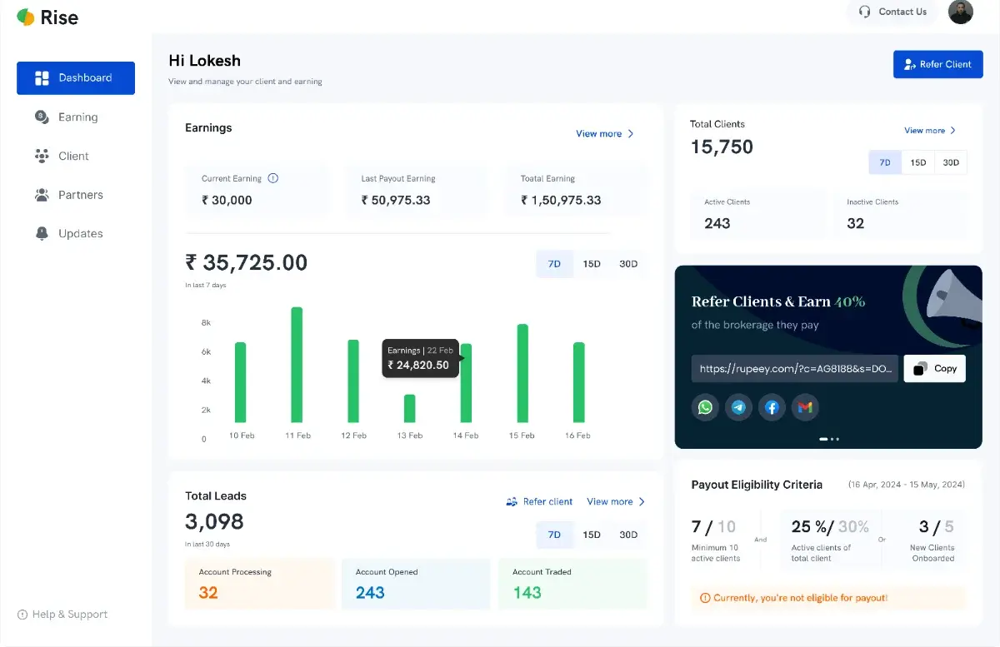
Current, last payout and total earnings. The money question, answered first.
A daily trend for the last 7, 15 or 30 days, so a change has context.
Active and inactive clients, not just a total.
The lead funnel: Account Processing, Opened and Traded. Where progress stalled.
Payout eligibility. Present, but lower, so it doesn’t take over the first look.
The order follows how often each thing is checked. Earnings and clients are looked at every visit. The funnel matters when something looks off. Eligibility matters most while a partner is working towards it.
Clients
A count of leads doesn’t tell a partner who to call. My Clients tracked each referral through Account Processing, Account Opened and Account Traded. Opened is not the same as active: an account can open and never trade. So the list was split into active clients, inactive clients and leads, and sorted by last traded date.
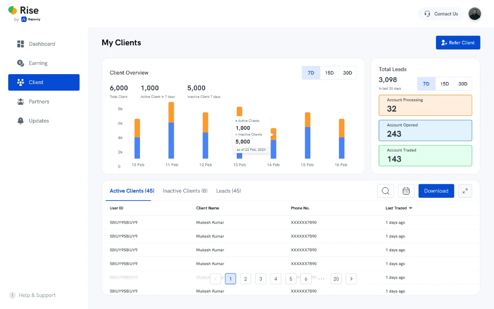
The funnel, with Processing, Opened and Traded as separate counts.
Active clients, inactive clients and leads, each a tab of its own.
Last traded, so a client who has gone quiet stands out.
The hope was that partners would use this to decide who to follow up with: a referral stuck in processing, a client who had stopped trading. That was a design hypothesis before launch, not something I tested with partners.
My Earnings showed current, pending, last payout and total earnings, plotted against clients, with brokerage and earnings for each client. A Payout History tab sat beside it, with the cycle, amount, deductions, bank details and date.
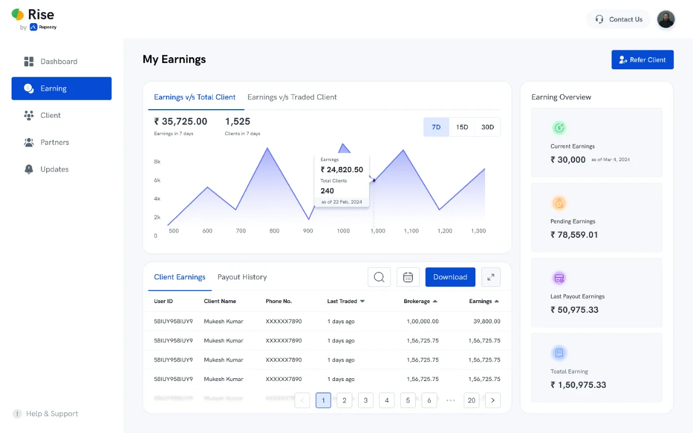
Brokerage and earnings per client, so a total can be traced back to the people behind it.
Two decisions
Partners were not paid automatically every cycle. The business set the rule. My job was to show progress towards each condition, and say plainly why a partner wasn’t eligible yet.
Not eligible yet: the first condition isn’t met, and neither of the other two is.
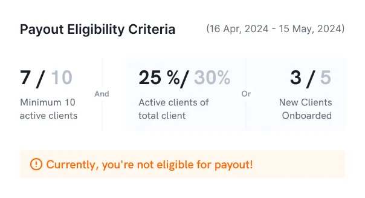
The shipped card shows each condition as progress. It reads And, then Or, from left to right, but it doesn’t show the grouping. The rule above spells that out.
“A message saying only ‘you’re not eligible for payout’ would produce exactly the phone call the whole product was built to remove.”
Kunal, Product Manager
I also considered hiding the card once a partner qualified, and rejected it. A dashboard that rearranges itself by state is harder to learn than one that stays still.
The portal could not show full client phone numbers. Each row showed a client’s name, a masked number, their status and last activity: enough to match the record with details a partner already held.
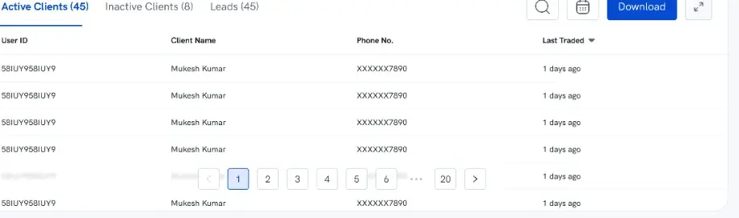
XXXXXX7890 is enough to find a record you already hold, and nothing on its own.
Mobile
Partners check on the go, so the same three areas came to the phone. The order stayed the same; the layout stacked.
Desktop. Earnings, clients and leads side by side.
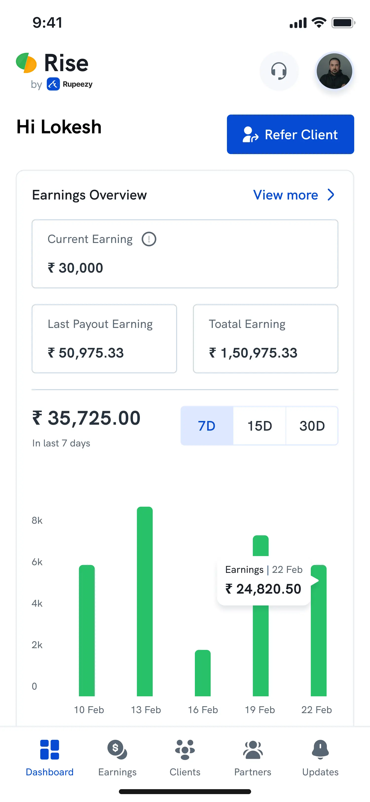
Phone. The same earnings first, stacked.
Kept
Changed
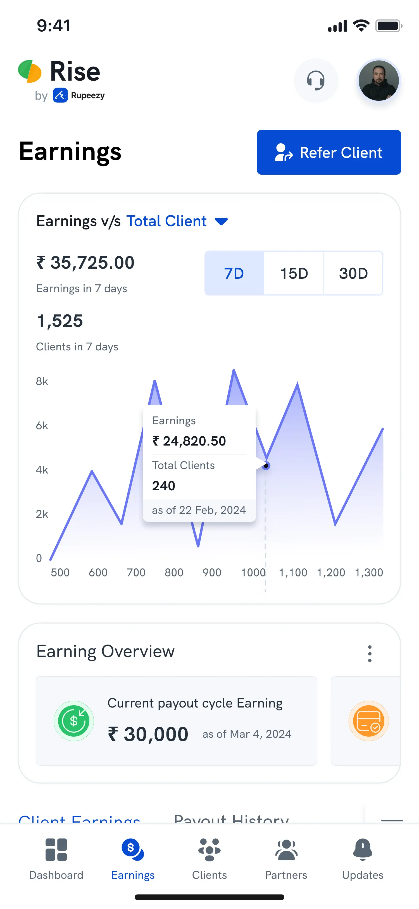
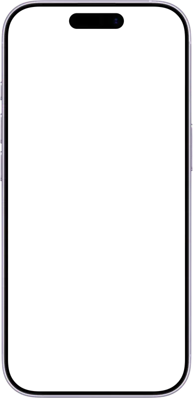
Earnings
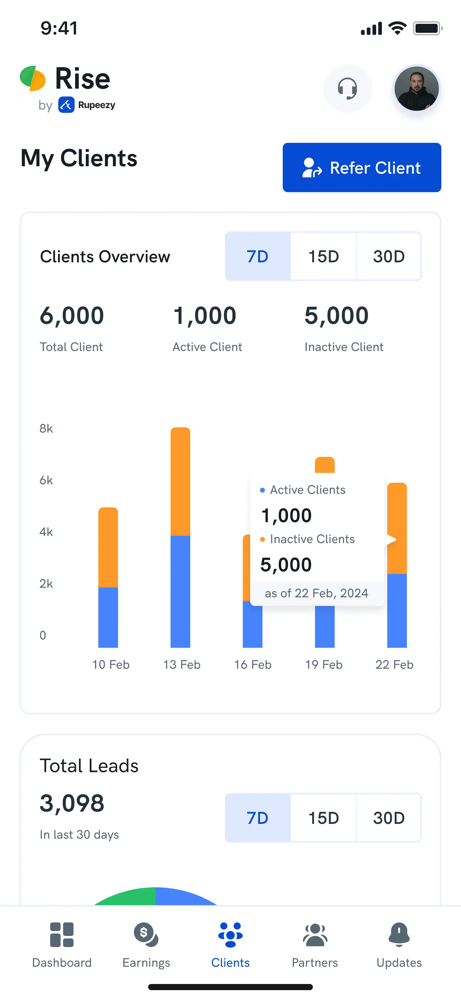
My Clients
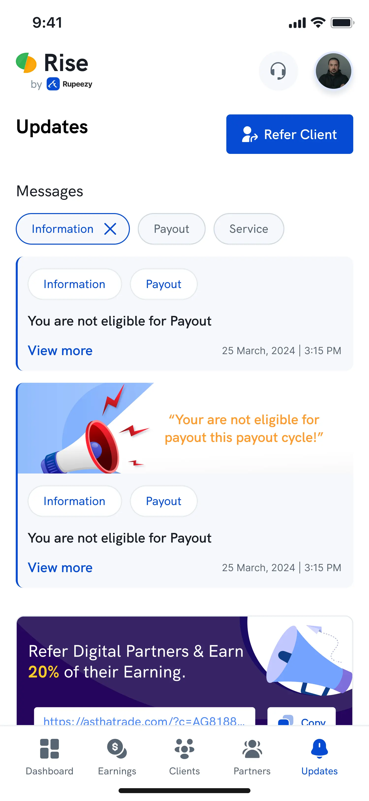
Updates
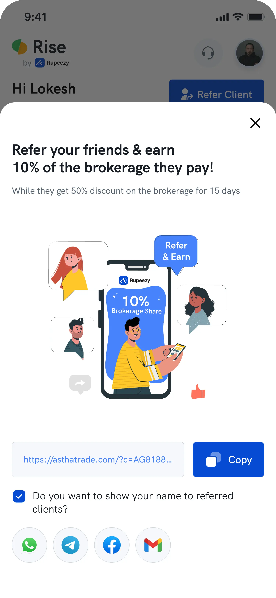
Refer and Earn
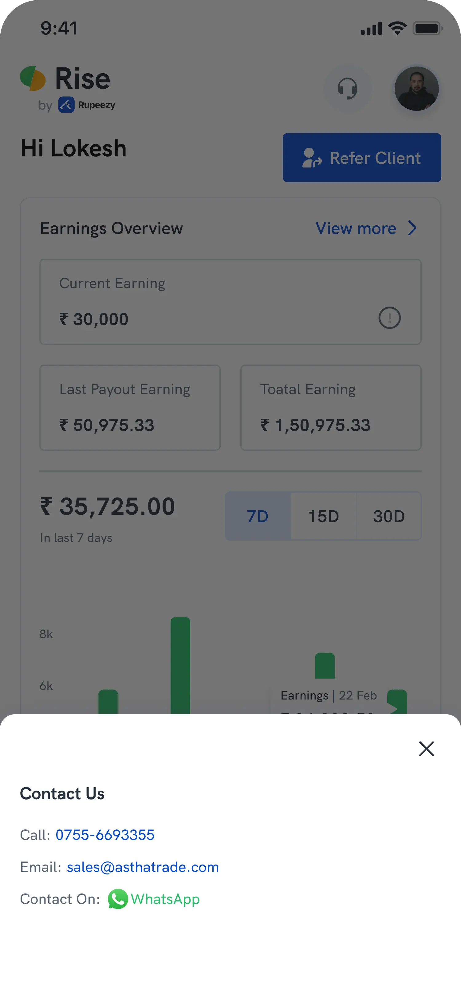
Contact Us
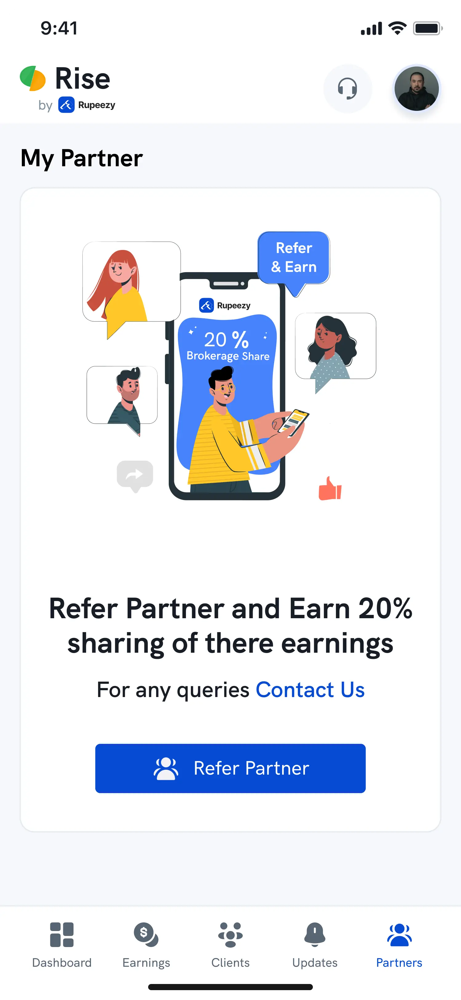
My Partner
The rest of the phone screens. Not usability-tested on mobile.
After launch
The hypothesis, before launch
If partners could see where referrals stalled and which clients had gone quiet, they could follow up themselves and lean less on support.
Reported by the business team
Partners were following up with referrals stuck at account processing, and nudging inactive clients.
These are outcomes reported by the teams closest to the data, not design impact I measured. No baseline was agreed at the start, I didn’t own analytics, and I can’t say the portal alone caused them.
What I’d test next
The biggest gap was that no partner saw the design before launch, and nobody agreed how we’d measure success. Here is how I’d close it now. None of this was done.
Recommended
Measures I’d track
Lead-to-client conversion. Repeat support contacts about payouts and conversion. Whether partners can explain the payout factors in a task. Time and errors when finding a stalled referral. Use of the funnel and client views. No targets until the team agrees them.
A dashboard isn’t the same as solving a visibility problem. Partners need enough of the trail to see what happened, why earnings changed, and what they can do next.